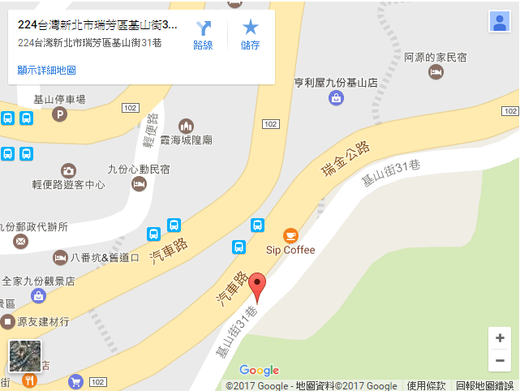

訪談店家：和風小築
介紹：
位於熱鬧九份的「九份民宿～和風小築民宿」，距離九份老街只需要一分鐘的路程。
吃美食、逛老街都非常方便，前往黃金博物館、太子賓館、水湳洞、陰陽海、金水公路等水金九熱門景 點也都近在咫尺。
無時無刻海就在您的眼前、山就在您的腳下，寧靜與熱鬧的山海風天地，可以讓您 身心靈沉澱，也可讓您享有獨特的人文旅行。
交通資訊：
1.台北捷運忠孝復興站一號出口，往前50公尺處搭乘台汽客運往金瓜石班車，於（舊道站）7-11下車，車程1小時。
2.搭乘台鐵－東部幹線往蘇澳、花蓮火車，於瑞芳站下車，轉搭基隆客運或台汽客運前往金瓜石班 車，或搭乘計程車，於（舊道站）7-11下車。

訪談內容
有關店家的一些事物：
民國95年創立,96年正式營業,目前分為兩個館,共有11個房間,為合法民宿。
環境變遷最大的改變是什麼：
以前人潮很少,晚上幾乎沒什麼人,現在從早上到晚上人一直都很多。
近來陸客團體比較少,（除了自由行的陸客外）,韓國和日本自由行的人數是很明顯的變多 ,尤其是韓國年輕人,他們非常喜歡九份～
另外一個人潮的改變就是之前大多是日本背包客大陸團體馬來西亞會住宿,
現在黑人阿各國的人也會來,來了也會選擇兩天一夜甚至玩三天的都很普遍！ 也變而商家的也幾乎都是外來的,本地人做得較多反而是民宿～
觀光客遊玩的時間點：
九月到十一月是九份觀光最好的時機,空氣好天氣也舒服。
寒暑假
這帶的小吃都很好吃也不貴，九份有名的大概就是芋圓、紅槽肉圓和草仔粿等等吧。
當地店家生意相關：
民宿和飲食業吧！畢竟九份已經是個觀光地區。
住一兩天的甚至到四天三夜的都蠻常見的。
住在九份有什麼心得感想：
是的～天氣只要潮濕就會很濕熱吧，但涼爽的時候配上夜景真的很舒服啦。